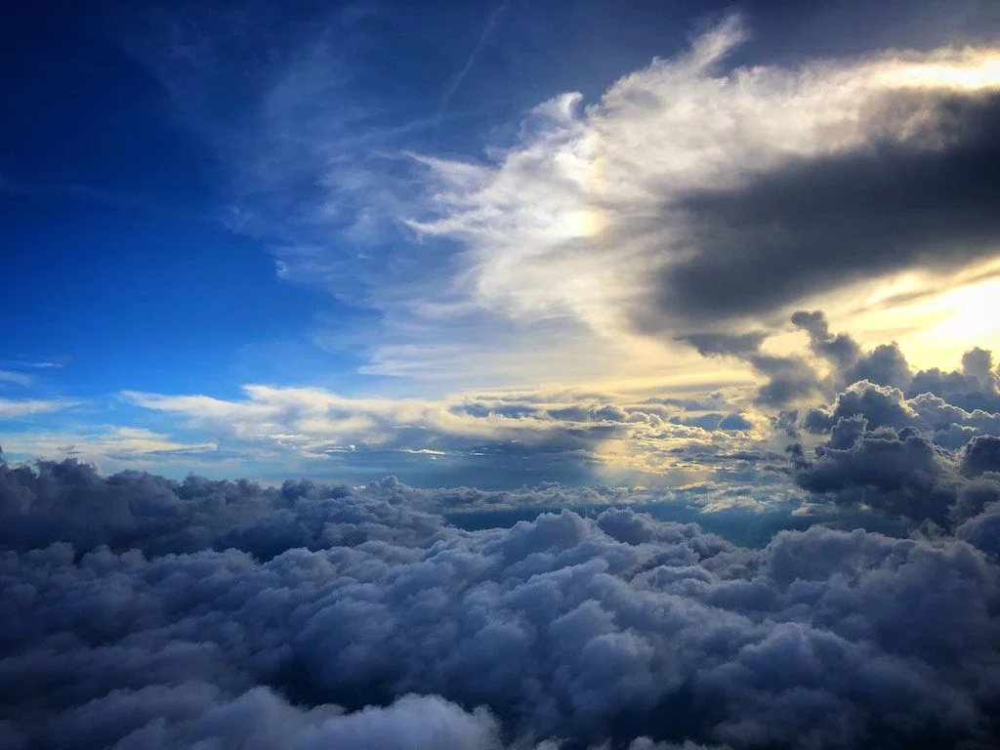

En términos sencillos, se puede decir que una nube es una masa de gotas de agua, cristales de hielo o ambas a la vez, que se mantiene en suspensión en la atmósfera, y cuya formación se debe a la condensación del vapor de agua en el cielo. Existen muchos tipos de nubes, las que se pueden diferenciar de acuerdo a sus formas y a la altitud en la que se encuentran.
Para que las nubes se formen se necesitan tres ingredientes: vapor de agua en la atmósfera, partículas que permitan su condensación y bajas temperaturas. La atmósfera está constituida por una variedad de gases entre los cuales se encuentra el vapor de agua procedente de la evaporación de las aguas (continentales y océanos), de la transpiración de las plantas y de la sublimación de los glaciares. Pero este vapor en suspensión no puede formar una nube por sí solo. Para que el vapor de agua se pueda agrupar necesita de un "Núcleo de Condensación" o "Aerosol", lo que, y explicado en términos sencillos, corresponde a una partícula de características higroscópicas (de gran afinidad por el agua), que permita la agrupación de las moléculas de vapor de agua y su posterior condensación. Estos potenciales núcleos se encuentran en abundancia en la atmósfera, entre los que se pueden contar el polvo, el polen, las partículas de sal provenientes del oleaje del mar y del rompimiento de las olas, y las cenizas provenientes de las erupciones volcánicas o incendios, entre otros. Una vez que estos dos ingredientes se encuentran falta un paso más para llegar a convertirse en nube. El vapor de agua y los núcleos de condensación deben encontrar temperaturas más bajas para alcanzar el punto de rocío o temperatura en la que las moléculas de vapor de agua se convertirán en gotas de agua líquida.
